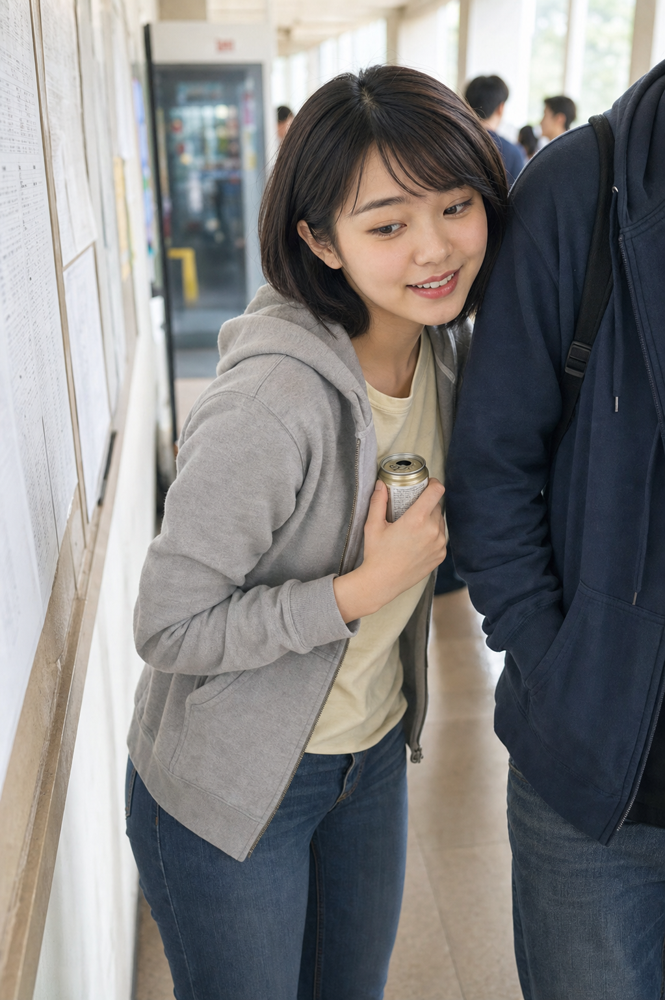

044. 어깨가 닿았을 뿐인데
수요일 오전 아홉 시.
강의동으로 걸어가는 길, 캠퍼스에는 초여름을 앞둔 햇살이 벌써부터 따가웠다. 용식은 매점에 들러 캔커피를 하나 사면서 조별과제 성적이 오늘 나온다는 걸 뒤늦게 떠올렸다. 지난 몇 주간 도서관 세미나실에 처박혀 있던 시간을 생각하면, 결과가 궁금하지 않을 수 없었다.
매점 앞에서 잠깐 폰을 확인했다. 초연에게서는 아무 연락도 없었다. 강릉에 다녀온 뒤로 요 며칠은 오히려 예전보다 편안했다. 문자를 주고받는 속도도 다시 자연스러워졌고, 서로 괜한 신경전을 벌이는 일도 줄었다. 용식은 그게 다행스러웠다.
학과 사무실 앞 게시판에는 조별과제 성적표가 붙어 있었다.
용식은 강의동 계단을 두 개씩 밟고 올라가며 매점에서 산 캔커피를 흔들었다. 게시판 앞에는 이미 몇몇이 모여 자기 조 이름을 찾고 있었다. 그 사이로 익숙한 뒤통수가 보였다.
[정다은] "야, 우리 조 나왔어?"
정다은이 뒤도 안 돌아보고 물었다. 용식이 온 걸 발소리로 알아챈 모양이었다.
[김용식] "몰라, 나도 방금 왔어."
두 사람은 나란히 서서 명단을 훑었다. 손가락으로 조 번호를 짚어 가던 정다은이 먼저 소리를 냈다.
[정다은] "찾았다. 어? 우리 A 나왔는데?"
[김용식] "진짜?"
[정다은] "봐봐, 여기."
정다은이 손가락으로 명단을 짚으며 몸을 그쪽으로 기울였다. 어깨가 자연스럽게 용식 쪽으로 붙었다. 특별할 것 없는 접촉이었다. 지금까지도 몇 번 있었던 일이었다.
그런데 이번엔 뭔가 달랐다.
[정다은] "야, 우리 진짜 고생했잖아. 특히 너, 발표 자료 그거 밤새 만든 거지?"
[김용식] "뭐, 그 정도까진 아니고."
[정다은] "겸손은. 나 다 알아, 세미나실에서 새벽까지 있었던 거."
정다은이 팔로 그의 옆구리를 툭 쳤다. 장난이었다. 그 장난 자체는 늘 있던 방식이었다. 그런데 손이 닿는 순간, 용식은 자기도 모르게 숨을 짧게 멈췄다.

[정다은] "왜 그렇게 놀라."
[김용식] "안 놀랐어."
[정다은] "놀랐는데?"
정다은이 눈을 살짝 접으며 웃었다. 매점 형광등 불빛 아래에서, 그 웃음이 평소보다 조금 더 오래 눈에 남았다.
용식은 이상한 기분을 느끼며 시선을 돌렸다. 명단 쪽을 보는 척했지만 눈에 글씨가 제대로 들어오지 않았다.
[정다은] "우리 이거 기념으로 뭐 먹으러 갈까?"
[김용식] "다음에."
[정다은] "맨날 다음에래."
정다은이 입을 삐죽였다. 서운한 척하는 얼굴이었지만 진짜로 서운해 보이지는 않았다. 그녀는 늘 이런 식이었다. 가볍게 다가왔다가 가볍게 물러났다. 지금까지 용식은 그 가벼움을 편하게만 받아들였다.
[정다은] "너 요즘 표정이 좀 이상해."
[김용식] "어떤 표정."
[정다은] "뭔가... 딴 데 정신 팔린 표정?"
용식은 그 말에 순간 움찔했다. 초연에게 들었던 말과 거의 똑같았다. 요즘 자신이 정말 그런 얼굴을 하고 다니는 건지, 아니면 사람들이 우연히 비슷한 말을 하는 건지 헷갈렸다.
[김용식] "그냥 피곤해서 그래."
[정다은] "그래? 여자친구랑 싸웠나 했지."
[김용식] "안 싸웠어."
[정다은] "그럼 다행이고."
정다은은 그렇게 말하고 잠깐 그의 폰이 들어 있는 주머니 쪽을 봤다. 아주 짧은 시선이었다. 세미나실에서 봤던 한서윤이라는 이름을 다시 꺼내지는 않았지만, 용식은 그 시선만으로도 그녀가 아직 잊지 않았다는 걸 알았다.
정다은이 몸을 돌려 명단에서 눈을 뗐다. 캔커피를 하나 사겠다며 매점 쪽으로 걸어가다가, 문득 뒤를 돌아봤다.
[정다은] "야, 김용식."
[김용식] "왜."
[정다은] "너 캔커피 하나 사 줄까? 성적 나온 기념으로."
[김용식] "됐어, 나 있어."
[정다은] "그럼 내 것만 사야겠다."
정다은은 그렇게 말하고 매점 안으로 들어갔다. 유리문에 비친 그녀의 옆모습이 잠깐 흔들리다 사라졌다. 용식은 잠깐 그 자리에 서서 그녀의 뒷모습을 봤다. 딱히 이유가 있어서 본 건 아니었다. 그냥 시선이 자연스럽게 그쪽으로 따라간 것뿐이었다.
그 순간을 스스로 알아챈 게 더 당황스러웠다.
[정다은] "야, 뭐 해, 안 가?"
캔커피를 사서 나온 정다은이 손을 흔들며 불렀다. 용식은 뒤늦게 정신을 차리고 걸음을 옮겼다.
[김용식] "간다, 가."
두 사람은 강의동 옆 벤치에 잠깐 앉았다. 정다은은 캔커피를 따며 오늘 있었던 다른 수업 얘기를 늘어놓았다. 용식은 대충 맞장구를 치면서도, 속으로는 계속 아까 그 순간을 되짚고 있었다.
별거 아니었다. 어깨가 잠깐 닿았고, 웃음이 조금 오래 남았을 뿐이었다. 그런데도 마음 한구석이 이상하게 술렁였다.
[정다은] "너 진짜 딴생각하네."
[김용식] "아니라니까."
[정다은] "뭐, 알았어. 안 물어볼게."
정다은은 더 캐묻지 않았다. 그게 오히려 더 신경 쓰였다. 그녀는 항상 적당한 선에서 멈출 줄 아는 사람이었다. 들이대는 것 같으면서도 결코 넘지 않는 그 거리감이, 지금 이 순간 용식을 더 흔들었다.
수업이 끝나고 집으로 돌아가는 차 안에서, 용식은 라디오도 켜지 않은 채 운전만 했다. 신호 대기 중에 문득 오늘 낮의 장면이 다시 떠올랐다. 어깨가 닿았던 감각, 눈이 마주쳤던 짧은 순간, 그리고 그 뒤에 남은 이상한 여운.
폴더폰이 울렸다. 초연이었다.
용식은 신호가 바뀌길 기다리며 답장을 썼다.
짧은 문자 몇 줄이었다. 그런데도 그걸 쓰는 동안 용식은 이상하게 죄책감 비슷한 걸 느꼈다. 아무 일도 없었는데, 마치 뭔가를 숨기고 있는 기분이었다.
집에 도착해서도 그 기분은 쉽게 가시지 않았다. 방에 누워 천장을 보는데, 낮의 장면이 자꾸 재생됐다. 어깨가 닿았을 뿐이다. 그 이상은 아무것도 없었다.
그런데 왜 자꾸 그 순간이 다시 떠오르는지, 스스로도 이해할 수 없었다.
용식은 폴더폰을 열어 정다은의 이름을 잠깐 봤다가, 다시 접었다. 인정하고 싶지 않은 감정이었다. 그렇다고 완전히 지워지지도 않았다.
그는 그 감정에 아직 이름을 붙이지 않기로 했다.
창밖 가로등이 하나둘 켜지는 걸 보며, 용식은 눈을 감았다. 내일이면 아무렇지 않게 잊힐 일이라고 스스로를 다독였다. 그러면서도 잠은 좀처럼 쉽게 오지 않았다.